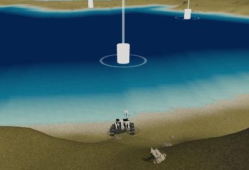

Where on Earth does Mars's Jezero Crater have a twin? Lake Salda, and the lakes like it.
Team: Team Physics Members: Tunay Dennis Diederich, Karan Kaya, Adrina Shakeri Bahador; teacher: Ayşegül Çağlayan Country: Türkiye Challenge: Identify Earth Locations that Analog the Permanent Moon Base Locations and Mars NASA Space Apps Challenge 2026, Universal Event
Drafted with AI assistance (Claude). Charts are drawn by code from the project data.1 / 7
The problem
Jezero Crater held a lake 3.5 billion years ago. Perseverance is drilling its rocks for signs of ancient life.
Before a mission flies, teams rehearse on Earth, at places that look and behave like the target.
NASA pairs Jezero with one lake here: Lake Salda, in Burdur, Türkiye.
The challenge asks us to find and describe more of these places with open data.
How good a twin is Salda, and is it the only one?
Drafted with AI assistance (Claude). Charts are drawn by code from the project data.2 / 7
How we compared them
Measured from NASA and ESA data
Temperature, air pressure, evaporation: NASA POWER
Terrain slope: ASTER (NASA and METI) on Earth, MOLA on Mars, same 900 m grid
Read from published studies
Water pH
Carbonate minerals
Lake type
Sediment layers
Each one scored 0 to 1 against Jezero, with the study it came from.
A place's score is the average of the variables it has. We always show how many that is.
Drafted with AI assistance (Claude). Charts are drawn by code from the project data.3 / 7
We scored 70 lakes and sites against Jezero
38 lakes in Türkiye, 24 lakes from other countries and 8 known analog sites, on ESA Sentinel-2 imagery. Click a lake and you see each variable
next to Jezero's value, with the source behind it. Try it: 2naydennis.github.io/Twin-Shores
Drafted with AI assistance (Claude). Charts are drawn by code from the project data.4 / 7
What we found
Grey: listed by NASA as an analog. Orange: candidates, with how many variables each score uses.
Lake Salda comes first: pH 9.1 to 9.5, a white carbonate shore, microbial mounds and a closed basin, close to what
Jezero's carbonates suggest. Next: Lake Van (Türkiye), Lake Alchichica (Mexico) and Lake Erçek (Türkiye).
Drafted with AI assistance (Claude). Charts are drawn by code from the project data.5 / 7
Can we trust the ranking?
Checks
Lake Salda, NASA's own Jezero analog, ranks 1 of 70.
Use only climate and slope and Salda drops to 31st. The match comes from its chemistry and rocks.
Weights redrawn at random 5,000 times: share of draws in the top 3 and top 5
Top 3
Top 5
Lake Salda
94%
99%
Lake Van
62%
83%
Lake Alchichica
51%
65%
Lake Erçek
61%
92%
Limits
Every place on Earth has over 100 times Mars's air pressure. These are twins of Jezero's old lake, not of Mars today.
Nobody has measured the pH of Jezero's lake.
Some lakes are scored on 3 variables, some on 7.
We looked at Mars only, not the Moon.
Drafted with AI assistance (Claude). Charts are drawn by code from the project data.6 / 7
Drive the twins in 3D
Lake Salda, by boat

Lake Erçek, a candidateJezero Crater, Mars
Real terrain from NASA SRTM and MOLA. Drive to the evidence points, or fill Jezero with its ancient lake.
The boat, rocks and trees are added for scale. Our Lake Salda page puts it beside Jezero from orbit, with a field plan:
27 km from Denizli Çardak airport, best from May to September. Next: sample Lake Erçek's shore and search beyond Türkiye.
Data: NASA POWER, MOLA, ASTER, SRTM, Planetary Analog Explorer; ESA Copernicus EU-DEM and Sentinel-2.
Code and text drafted with AI assistance; every use is listed in the repository.
Drafted with AI assistance (Claude). Charts are drawn by code from the project data.7 / 7